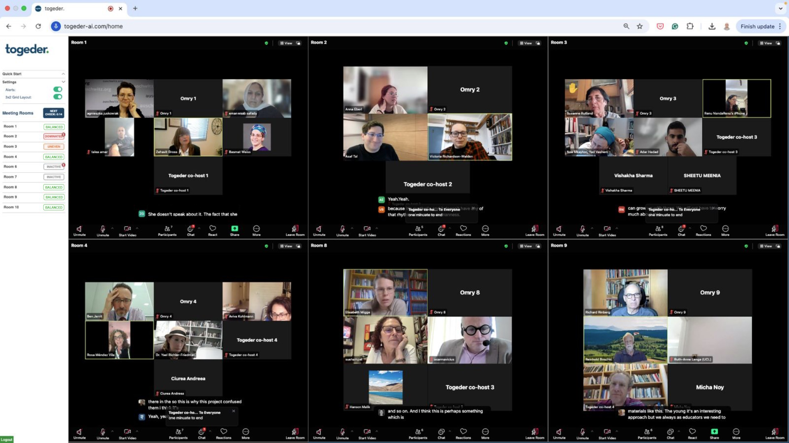

Overview
This use case highlights how Togeder Breakout Dashboard was successfully used to transform a traditional virtual conference into highly engaging, interactive event. The Conference Engagement initiative aims to address common challenges such as attendee passivity, networking barriers, and content retention. By leveraging innovative technologies and engagement methodologies, this approach creates more meaningful participation opportunities, ensures knowledge sharing effectiveness, and maximizes the value of conference experiences for all stakeholders. Key stakeholders include event organizers, speakers, attendees and sponsors. The core value proposition is the transformation of passive conference experiences into dynamic, participatory events that generate lasting impact, meaningful connections, and measurable outcomes for all participants.
The Challenge
Virtual conferences often struggle to move beyond passive consumption. Attendees may disengage during lengthy sessions, and meaningful peer dialogue is hard to scale. Organizers typically lack visibility into breakout room dynamics and miss insights from small-group discussions.
The goal, as defined by the conference organizers, was to transform virtual conferences into dynamic, dialogue-driven experiences. By integrating thoughtful facilitation with smart technology, the aim was to foster real-time engagement, deepen participant reflection, and support the conference’s broader goals of community-building and ethical discourse..Solution: From Panels to People – Using Togeder’s Breakout Rooms Dashboard
Overview of the Group Activity
At the "Holocaust Memory in the Age of Artificial Intelligence" virtual conference, a thoughtfully designed group assignment was integrated into the program to enhance participant engagement and foster deeper discussions. Togeder's Breakout Rooms Dashboard is a tool to transform a traditional virtual conference model by prioritizing human connection over passive content consumption. The platform enabled organizers to create and monitor multiple small-group discussions simultaneously, turning attendees into active participants engaged in meaningful dialogue. Through real-time insights into room dynamics to promote participation, facilitators can support struggling conversations, inactive rooms, and spotlight powerful discussions as they unfolded. This approach created psychological safety for discussing sensitive topics while ensuring every participant felt heard and valued. By shifting from presenter-centered panels to participant-driven conversations, Togeder's solution helped the conference achieve deeper engagement, stronger community building, and more impactful outcomes.
Group Assignment
Prior to the breakout discussions, participants were introduced to three innovative and controversial digital Holocaust memory projects: Anne Frank AI, Dimensions in Testimony (by USC Shoah Foundation), and Young Again / Never Again.
These examples served as the basis for a structured group assignment focused on exploring authenticity in digital Holocaust representations.
In their breakout rooms, participants were asked to choose two of the three projects and evaluate them on a 1–10 scale for authenticity.
They were also instructed to define and explain the criteria they used—such as historical accuracy, emotional impact, and survivor voice—to support their evaluations.
This exercise anchored the group dialogue in a shared pedagogical and ethical inquiry, prompting thoughtful debates about the boundaries of AI use in Holocaust education.
Attendees were divided into breakout rooms for 30-minute sessions, 10 groups of 10 participants in each room, allowing for intimate conversations on the use of AI in preserving Holocaust memory.
Togeder's Breakout Rooms Dashboard was used to:
- Monitor real-time participation, enabling facilitators to observe all rooms from a central dashboard.
- Identify inactive rooms with AI alerts. Two rooms were merged in real time to boost engagement.
- Provide in-session guidance by summarizing previous dialogue before a facilitator entered a room.
- Deliver immediate session feedback as participants returned to the main meeting room.
- Capture transcripts and summaries for research and post-event analysis.
Togeder's Post-Meeting Report
Following the conference and the groups discussions, Togeder generated a detailed post-meeting report that served as a rich data source for research and reflection for the stakeholders of the conference. This report included:
- AI-Generated Summaries, including a concise overviews captured key themes, arguments, and emotional tones from each room.
- Transcripts of Group Discussions, including full verbatim records of each breakout room provided qualitative data for future analysis.
- Participation Analytics, including engagement distribution, to help researchers assess group dynamics and equity of voice.
- Authenticity Ratings of each source, as it was a key area the stakeholders were interested to evaluate amoung a large and diverse group.
- Emerging Themes and Emotional Cues, by identifing recurring themes (e.g., ethical concerns, survivor voice, AI transparency) and even flagged emotionally charged language for further interpretation.
Conclusion
This case demonstrates that Togeder's Breakout Rooms Dashboard is not only a tool for guiding group work, but also a powerful platform for transforming virtual conferences into an engaging conference. The interactive group discussions powered by Togeder’s real-time facilitation and reporting tools, turned a potentially passive conference into one that values dialogue, critical thinking, and collaborative inquiry. This use case provides an exciting model for the organization of future scientific conferences. It supports deep interactions among groups experts, helps immediately bring insights to the audience, and disseminate these insights of the deliberations and their analyses among experts and to the scientific community.
For additional details, see our Blog From Panels to People: Transforming a Virtual Conference